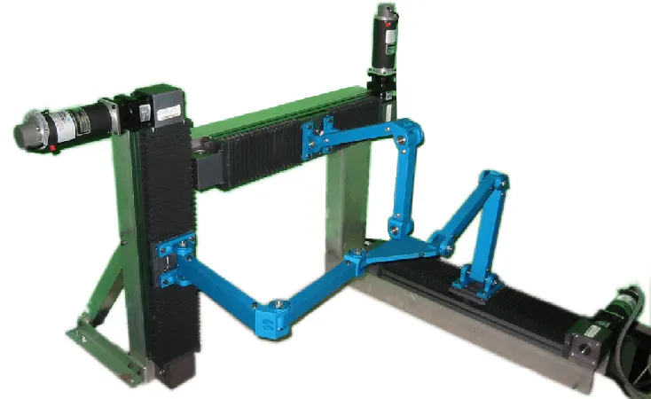
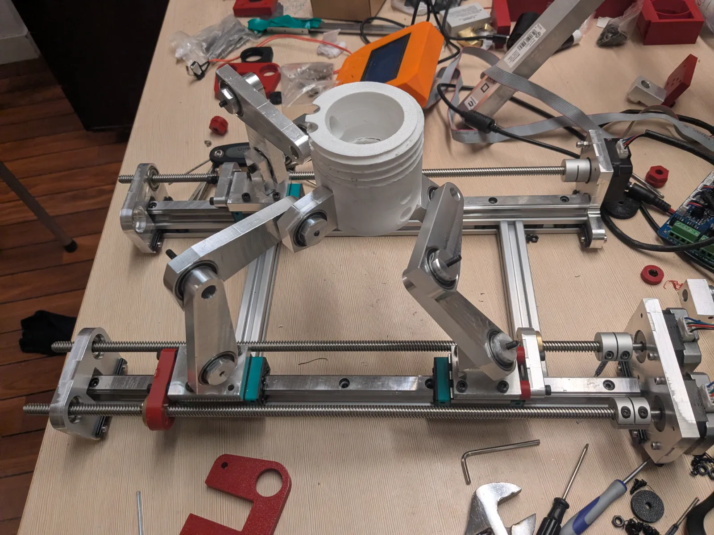
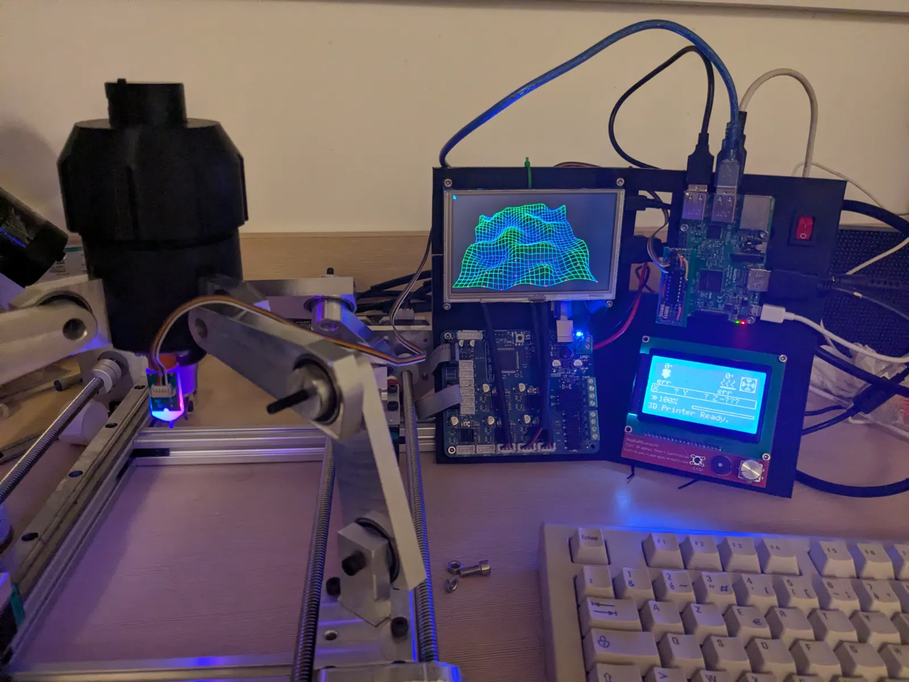

Why Hobbyists Typically Fail
Most hobbyist tattoo robots give really poor results, as per this example. The main reason is that even slight inaccuracies in the needle depth can cause a blow-out, which means the ink is deposited too deep (in the layer of fat under the skin) and makes a huge puddle instead of a clean spot. Most hobbyists use modified Core-XY 3D printers, that not only lack sensors to measure skin height, but also lack a proper z-axis. Indeed, in Core-XY 3D printers, the print head doesn't move up and down, the build plate does, which makes adjusting needle height quite dangerous.
The most critical issue is thus to control very precisely the depth of the needle. This principle guided all my design choices.
Structure
This is certainly the most unusual element of the project. To be able to adjust needle height, the toolhead needs to be able to move in 3D space, unlike a 3D printer where one axis is handled by moving the build plate. With a traditional architecture, that would mean having a nested gantry system, which makes maintaining stiffness difficult.
I opted for a parallel kinematic system, specifically the Tripteron (rather than the more traditional Delta because I wanted to avoid ball joints). Tripterons are typically implemented in the following way with 3 perpendicular axes:


but the axes can actually be in almost any position. I decided to have all 3 axes parallel, to match the geometry of an arm and make sure the machine will be able to do forearm tattoos.


To ensure maximum precision and reliability, I chose to have each axis mounted on a linear guide rail and actuated by lead screws.
Measurement
It is critical to know at all times where the needle is relative to the skin. I opted to have a sensor scan the skin and make a 3D map of it prior to the tattooing.
Since LiDAR sensors are typically not precise enough, I first implemented mapping with a BLTouch (touch sensors designed for 3D printers).


While this did work, it was very slow because of the sensor's reaction time. I decided to replace it by a much more expensive laser triangulation sensor, able to measure distance almost instantly and with very high precision.
Tattoo Machine Mounting
I used a commercially available tattoo machine, which is simply cylindrical and does not have any mounting holes. To mount it on the toolhead, I designed a collet mechanism based on 3D printed pieces, the collet itself being in TPU for maximum friction.
Software and Electronics
The motors are controlled by a 3D printer control board running Marlin. Since Marlin doesn't support tripteron geometry, a Raspberry Pi computes the appropriate transformation and sends G-code commands to the control board to trick it into performing the expected movements.
The Raspberry Pi is equipped with a monitor to render a 3D wireframe map of the skin during operation. It features a complete user interface allowing the user to run tests, run 3D mapping with desired precision, start and stop 3D rendering, and start tattooing.
To make a tattoo, the user inputs an SVG file, and the program is able to convert it into a toolpath for the toolhead.